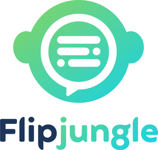
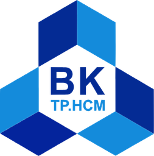

Agentic RAG & GenAI
Agent architectures, retrieval pipelines and evaluation for assistants that answer, recommend, quote and look things up — in production.
Currently @ Manulife · AI & Enterprise Data Office
Senior Data Scientist (AI), Agentic RAG architect, GenAI engineer, causal inference and analytics, MLOps practitioner.
I build Agentic RAG assistants, measure the real business value of GenAI with causal inference, and turn massive raw data into decisions — now for insurance across Asia at Manulife, previously for semiconductor design at Renesas.
01 · About
I'm a Data Scientist who sits where analytics meets AI engineering. In Manulife's AI & Enterprise Data Office, I design Agentic RAG assistants for insurance agents and quantify the impact of GenAI with Difference-in-Differences — then turn the numbers into monthly reports for regional leadership. I also drive AI enablement: training 300+ non-IT colleagues on Microsoft 365 Copilot (rated 4.9/5) and bringing Databricks Genie to teams like Marketing, CX and Agency, so colleagues put AI to work in their everyday tools and data.
Before that, at Renesas Electronics, I architected AI agents and an in-house RAG library for IC-design teams, working with colleagues in Japan, Malaysia, China, the USA and Germany — and was promoted from Engineer I to Engineer II along the way.
I care about AI that ships: clean pipelines, measurable outcomes, and systems people actually use. I'm currently pursuing a Master's in Computer Science at Ho Chi Minh City University of Technology.
Agent architectures, retrieval pipelines and evaluation for assistants that answer, recommend, quote and look things up — in production.
Difference-in-Differences, A/B and hypothesis testing to prove impact — delivered as executive dashboards and regional reports.
Ingestion pipelines, Databricks, MLflow and CI/CD that take models from notebook to a reliable, monitored service.
02 · Experience
From research assistant to Manulife's AI & Enterprise Data Office — across insurance, semiconductors, EdTech and fintech.
Manulife · AI & Enterprise Data Office
Collaborating with AI and business teams across Singapore, Hong Kong, China and Japan.
Value delivered for the Vietnam market. The AI products below support Manulife's Agency and Partner channels in selling insurance — from product questions and quotations to measuring what GenAI actually earns.
Renesas Electronics · AI Department, Information System Division
IT Delivery & Service. Worked with teams in Vietnam, Japan, Malaysia, China, the USA and Germany.
Chat agent + batch system to create and validate IC-design requirements; UVM/SystemC rule-check auditing; AI typo-review agent; unified docs + code ingestion.
In-house RAG library for multi-format parsing, chunking, embedding and indexing; converts raw files and most programming languages into structured Markdown.
Keyword search across hundreds of GBs of unstructured data, plus the CLI for a high-throughput uploader.
Pipeline syncing AI-app usage data into the Modern Data Platform; Databricks dashboards for AI & Data Intelligence services.
Wellora Click
Data science for a fast-growing nail-salon booking app and equipment-service platform — two-sided business problems solved with ML and statistical modeling.

Flipjungle AI · EdTech
International University · VNU-HCM
Phu Hung Securities Corp
03 · Selected Work
My AI work at Manulife has delivered $15M+ in value for the Vietnam market. Enterprise work, so no public repos — open any project for the full story: the problem, what I built and how it works.
Agentic RAG in the MPA mobile app
Designed the Agentic RAG architecture and built the end-to-end data pipelines behind an AI assistant for insurance agents — one conversation to answer product questions, recommend plans, generate quotations, read customer data into insights and next-best-action recommendations, and look up a customer's policies, claims, payments and transactions.
Measuring GenAI impact
A Difference-in-Differences causal model that quantifies the real business value of GenAI tools, powering monthly Vietnam performance reports for regional stakeholders.
Sales enablement in Salesforce
Internal sales-support chatbot that gives instant access to SOPs, Product Worksheets and real-time customer objection-handling guidance.
Requirement engineering for IC design
Chat agent and batch system to create and validate requirements, rule-check auditing for UVM/SystemC codebases, an AI typo-review agent, and unified ingestion of docs and source code.
Renesas Document Intelligence
Core RAG library for multi-format parsing, chunking, embedding and indexing — with a universal parser that turns raw files and nearly any programming language into structured Markdown, preserving hierarchy.
Insights for the Strategy Department
Lead scoring, orphan-policyholder identification for re-assignment, and geographic investment analysis to pinpoint high-potential provinces for more capital.
Big-data keyword miner
Search engine that mines keywords across hundreds of GBs of unstructured data, plus the CLI for a high-throughput uploader that streamlines developer workflows.
Observability for AI services
Pipeline syncing AI-application usage data into the Modern Data Platform, with Databricks dashboards monitoring AI & Data Intelligence services.
Two-sided marketplace ML
Recommendation engines and booking/pricing optimization to lift conversion; predictive-maintenance models and technician logistics to cut equipment downtime.
EdTech + LLM evaluation
GPT, Gemini, Claude and Llama integrated with RAG and fine-tuning; logical reasoning for math practice tests; an MLflow evaluation platform shipped via GitHub Actions.
NLP research
Deep-learning Question Answering system that supports university admissions consulting.
Fintech ML
LSTM models to predict stock prices and sentiment-analysis models for securities articles.
04 · Toolkit
Day-to-day: Jira · Slack · GitHub · Microsoft Office — and plenty of cross-timezone calls.
05 · Credentials
Databricks
Databricks
IBM
Honors

2025 — 2027 (expected)
Ho Chi Minh City University of Technology — VNU-HCM
2019 — 2023
International University — VNU-HCM
06 · Contact
I'm always happy to talk about Agentic RAG, measuring the impact of AI, or building data platforms that scale. My inbox is open.